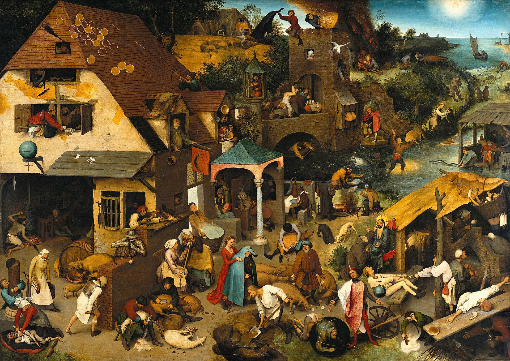
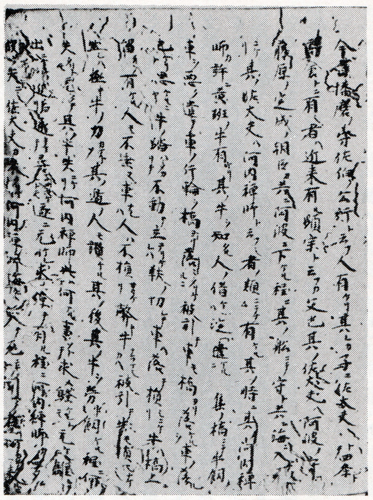
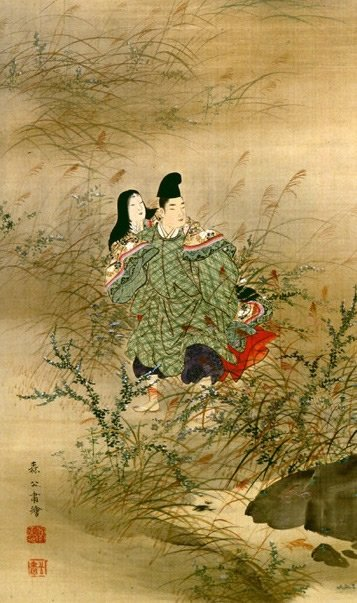
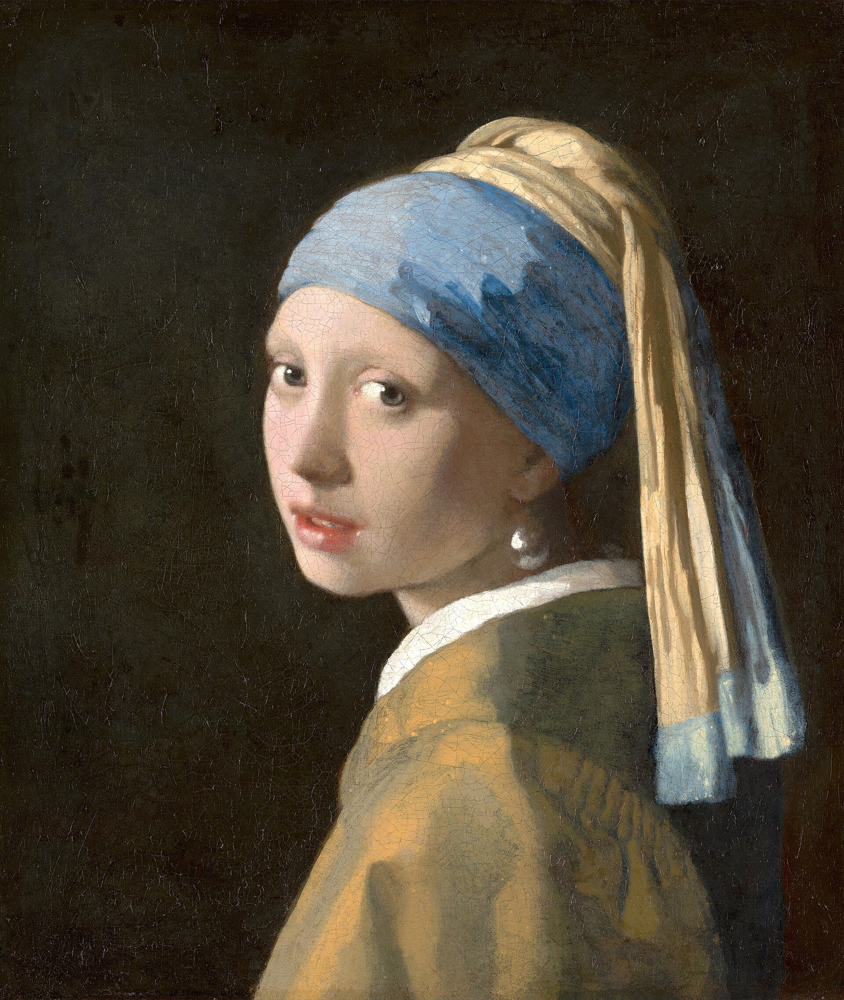
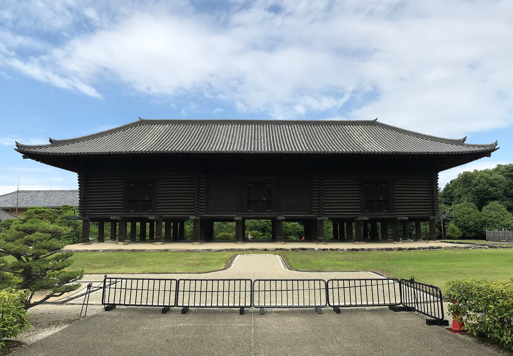
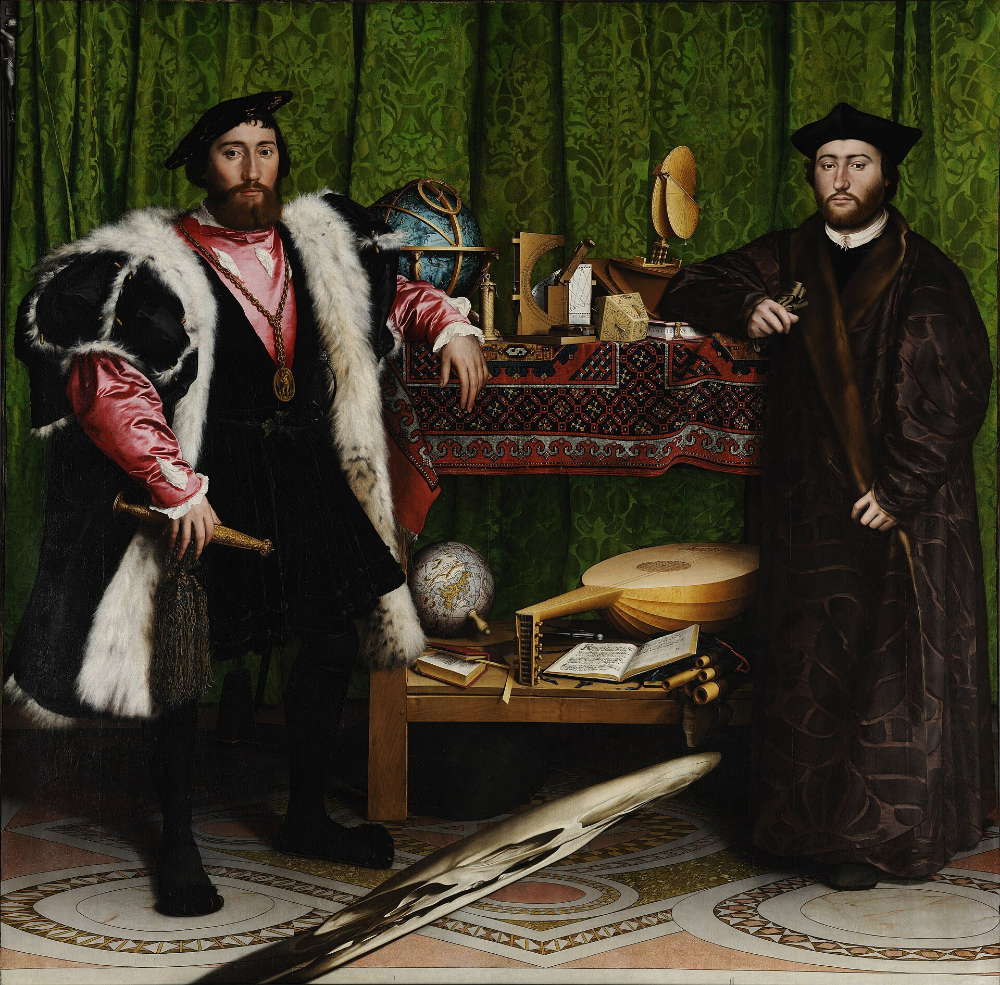
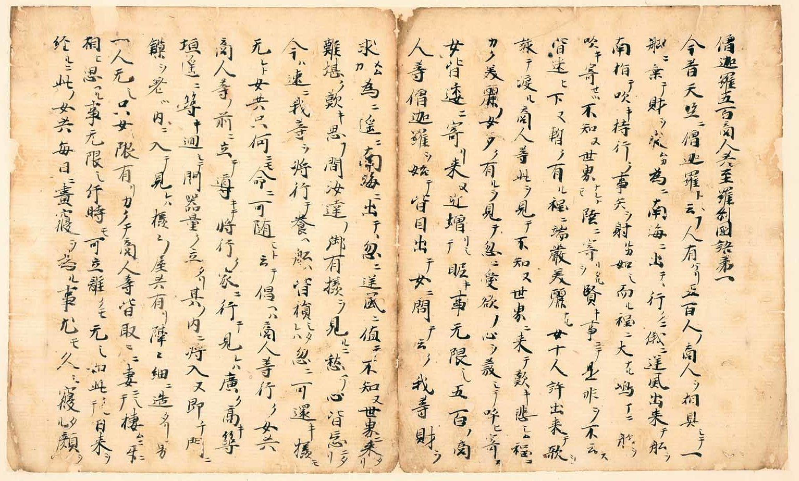
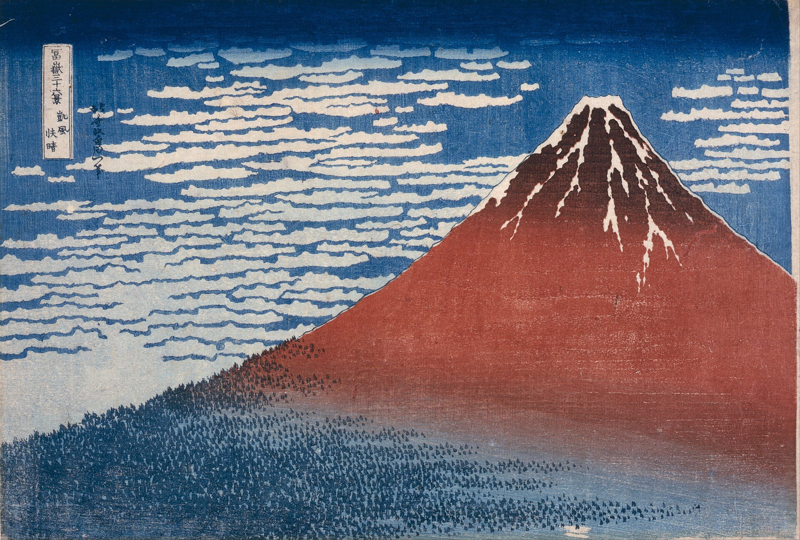
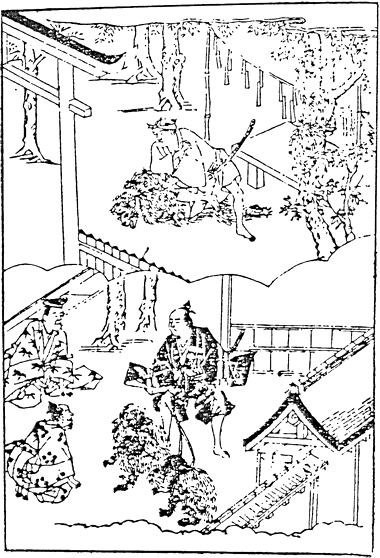
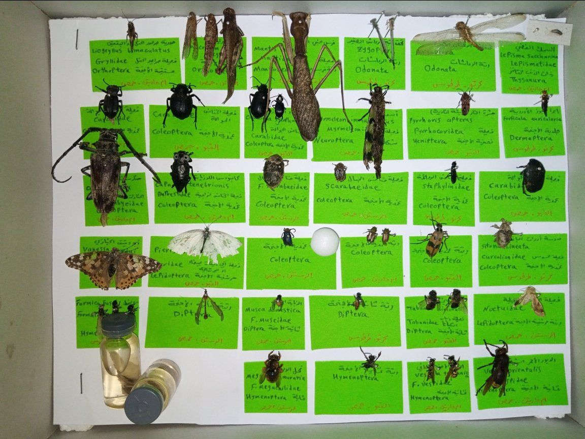

第1回
百あまりの諺が一つの村に詰めこまれ、どの人物も一話ぶんの身ぶりだけを演じている。
Pieter Bruegel the Elder／Public domain／Wikimedia Commons（《ネーデルラントの諺》1559年、ベルリン絵画館）
第1回配布資料「説話とは何か ―『今昔物語集』を読む①」の範囲。この授業で使う道具＝術語「説話」を手に入れ、『伊勢物語』第六段と『今昔物語集』巻二十七第七話で実際に使ってみる回。説明の順序はプリントどおりではない：プリントは術語①〜④を先に示し、本文を後に置くが、本教材は先に時代と本文の読み方を準備し、二つの本文を読んでから、術語を一つずつ同じ二話に当てはめる（定義を読んだ直後に「使ってみる」相手がいるようにするため）。
プリントは『今昔物語集』の「前提となるもの」を二つ挙げる。ジャンル＝説話集・説話、時代＝中世（中古）。ジャンルのほうは、この回の主題そのものなので4〜8章で組み立てる。ここでは先に、本の基本的な事実と、時代の位置を確かめておく。
| 事項 | 内容 |
|---|---|
| 成立 | 12世紀前半（院政期）とされる。事典によって幅があり、「12世紀初頭」「1120年（保安元年）以降まもなく、白河院政のころ」「1130〜40年頃か」などと書かれる。シラバスは「12世紀初頭」。 |
| 編者 | 未詳。源隆国（宇治大納言）を編者とする説は、『宇治拾遺物語』序にいう『宇治大納言物語』と本書を同一視したことによるが、隆国の没後の記事を含むことなどから、そのままでは受け入れられないとされる。鳥羽僧正覚猷説もある。貴族か僧侶か、単独か複数かも決着していない。 |
| 構成 | 全31巻（巻八・十八・二十一を欠く）。天竺（インド）＝巻一〜五、震旦（中国）＝巻六〜十、本朝（日本）＝巻十一〜三十一。それぞれを仏法と世俗に分ける。 |
| 話数 | 1059話（標題だけ残って本文を欠く19話を含む）。一般向けには「一千余話」と言う。 |
| 形式 | 各話は「今ハ昔」で書き起こし、「トナム語リ伝ヘタルトヤ」で結ぶ。漢字を大きく、片仮名を小さく添える書き方（片仮名宣命体）で書かれる（2章）。文中には意図的な欠字（空白）が多い（第10回「空白」）。 |
| 巻二十七 | 「本朝 付霊鬼」。霊や鬼の怪異を集めた巻。今回読む話はその第七「在原業平中将女被噉鬼語」。 |
| 伝本 | 現存最古の写本は鈴鹿本（鎌倉中期の書写、国宝、京都大学附属図書館蔵）。巻二・五・七・九・十・十二・十七・二十七・二十九の9冊が残り、巻二十七を含む。「今昔物語集」という書名は、この本によって確定できるとされる。 |
| 刊本 | 江戸時代に井沢長秀（蟠竜）考訂『今昔物語』が本朝部のみ刊行された（享保18年＝1733年刊。前編は享保5年＝1720年刊かともいわれ、資料に揺れがある）。それまでは写本で、ごく限られた読者にしか読まれなかったとされる。 |
| 引用に使う本 | 巻二十七は新日本古典文学大系37『今昔物語集 五』（森正人校注、岩波書店、1996）。『伊勢物語』は新日本古典文学大系17『竹取物語 伊勢物語』（堀内秀晃・秋山虔校注、1997。底本は学習院大学蔵伝定家筆本＝天福本）。 |
文学史では、時代を上代・中古・中世・近世・近代・現代に分けるのが一般的である（おおよそ、上代＝奈良時代まで、中古＝平安時代、中世＝鎌倉〜室町時代、近世＝江戸時代）。12世紀前半の『今昔物語集』は平安時代末期なので、区分のうえでは「中古」に属する。それでもプリントが「中世（中古）」と両方を書いているのは、この本が二つの区分の境目に立つためと考えられる（境目であることの中身は次の1.3、説話が中世の文学を動かすという面は7.4で扱う）。
12世紀前半は、白河上皇が院政を始めた（1086年）あとの院政期にあたる。本は人の手で一冊ずつ書き写す写本で伝わり、『今昔物語集』も江戸時代に刊行されるまで、写本で細々と伝わった（1.1）。この時代背景については、受講者の質問から書き足した次の囲みで詳しく見る。
授業メモ：文学の時代区分は、歴史の時代区分、つまり権力の所在と一致している。中世と近世のあいだには出版という大きな変化がある。
STEP 1 時代区分＝「誰が権力を握っていたか」。区分の境目は、権力が別の担い手へ移った時点に置かれている。
| 文学史の区分 | おおよその時代 | 権力の所在 |
|---|---|---|
| 上代 | 奈良時代まで | 天皇と、律令による朝廷（都は大和） |
| 中古 | 平安時代（794〜） | 平安京の貴族政権。藤原氏の摂関政治 → 上皇の院政 |
| 中世 | 鎌倉・室町時代（12世紀末〜） | 武士の政権（幕府）が並び立ち、やがて主導する |
| 近世 | 江戸時代（1603〜） | 江戸幕府による統一的な武家支配 |
| 近代 | 明治以降 | 近代国家（天皇を元首とする立憲体制） |
STEP 2 『今昔』は「中古の最後、中世の直前」に置かれる。12世紀前半は、白河上皇が院政を始めた（1086年）あとの院政期にあたる。権力は摂関家から上皇（院）へ移り、さらにその院や貴族が、地方で力をつけた武士を頼りはじめていた。数十年後には平氏が政権を握り、12世紀末に鎌倉幕府が開かれて「中世」に入る。つまり『今昔』は、貴族の世の内側で、次の担い手（武士）の足音が聞こえはじめた時代の本である。プリントが「中世（中古）」と両方を書くのは、この境目の位置のためと読める。
STEP 3 その時代の空気が、集の中身に表れている（本教材の整理）。
STEP 4 中世と近世のあいだの「出版」。中世までの本は、人が一冊ずつ書き写す写本で伝わった。読める人も部数もごくわずかである。江戸時代に入ると木版印刷による商業出版が広がり、同じ本が大量に、町の人々にも行きわたるようになった。『今昔物語集』も写本で細々と伝わったのち、18世紀前半に本朝の部が版本として刊行され、ひろく読まれる道が開けたとされる（PHOTO 5 の江戸時代の挿絵本は、この流れの中にある）。「誰が読めたか」が大きく変わるので、近世は「書き写す時代」から「刷って売る時代」への境目でもある。この話の続きは第2回「享受史」。
※ 年代は一般的な日本史の知識による。STEP 3 の「時代の空気」との結びつけは本教材の整理であり、授業での説明を優先すること。版本刊行の具体的な書名・年は未確認。
※ 上の囲みの末尾で「未確認」とした版本については、その後の調べで、井沢長秀考訂『今昔物語』（本朝部のみ、享保18年＝1733年刊。前編は享保5年刊かともいう）であることを確認した（1.1の表と出典）。
PHOTO 1｜現実

鈴鹿本の巻二十七は、霊と鬼の話ばかりを集めた一巻を、古い写本のかたちで今に伝えている。
岩波書店『日本古典文学大系』付録の影印／CC0（Commonsの記載による）／Wikimedia Commons（巻二十七第二十六話の頁）
MITATE 1｜見立て
地層は時代の名で呼ばれるが、境目の一枚はいつも上と下の両方に属している。
United States Geological Survey／Public domain／Wikimedia Commons（グランドキャニオンの大不整合）
3章で読む二つの本文は、見た目からして違う。『伊勢物語』は平仮名を主とする和文、『今昔物語集』は漢字片仮名交じり文である。後者は慣れないと一行も進めないので、読み方の規則を先にまとめる。
写本では片仮名が漢字の右下に小さく添えられている（PHOTO 1 の鈴鹿本の頁、PHOTO 4 の写本の頁で見られる）。本教材の原文は、読みやすさのため片仮名を本文と同じ大きさで組んでいる。漢字だけを拾うと漢文のように見え、片仮名だけを拾うと助詞・助動詞の列になる。漢字を和語で読み、片仮名で活用と助詞を補う、というのが基本の読み方である。
漢字片仮名交じり文には、漢文の名残で下から返って読む字（返読文字）がある。「不」「可」「被」は、書かれた位置では読まず、後ろの語を読んでから戻って読む。片仮名の送り仮名が、どう読むかの手がかりになる。
| 書き方 | 読み方 | 本文（巻二十七第七）の例 |
|---|---|---|
| 不〜ズ／不〜ヌ／不〜ザリ… | 後ろの動詞を読んでから、打消「ず」で読む。送り仮名がその活用形を示す。 | 世ニ不知ズ（しらず）／人モ不住ヌ（すまぬ）／音モ不為ザリケレバ（せざりければ）／案内不知ザラム（しらざらむ）／着物ヲモ不取敢ズ（とりあへず） |
| 可〜キ | 「べき」と読む（「べし」の連体形）。 | 可将隠キ所（ゐてかくるべき）／可立寄キ様（たちよるべき） |
| 不〜マジキ | 「まじき」と読む。「不」は打消の意を示す字で、読みは「マジ」に含まれる。 | 努々不立寄マジキ也（たちよるまじきなり） |
| 不可〜ズ | 「べからず」と読む。 | 宿セム事ハ不可思懸ズ（おもひかくべからず） |
| 被〜 | 受身「る・らる」で読む。 | 女被噉鬼（おににくらはるる） |
また、和語に意味の近い漢語・漢字を当てる宛字が多い。字面の音読みで読むと誤る。
| 本文の字 | 読み | 意味・注意 |
|---|---|---|
| 微妙シ／微妙ク | めでたし／めでたく | すばらしい。仏典で「すぐれて妙なる」意の漢語「微妙」を当てたもの。 |
| 仮借シ | けさうし | 「懸想（けさう）す」＝恋い慕って言い寄る。音の近い「仮借」を当てる。 |
| 奇異ク | あさましく | 思いもよらず、あきれるほど。 |
| 祖共 | おやども | 親たち。 |
| 美 | うるはし | 端正で美しい。 |
| 将（将行テ・可将隠キ） | ゐる（ゐて） | 「率る」＝連れる。 |
| 形 | 働き | 本文の例と訳 |
|---|---|---|
| え〜打消 | 副詞「え」＋打消（ず・じ・まじ）で不可能「〜できない」。 | 女のえ得まじかりける（手に入れられそうになかった）／え聞かざりけり（聞くことができなかった） |
| けり | 過去の伝聞「〜たそうだ」と、気づき・詠嘆「〜だったのだ」。 | 男ありけり（いたそうだ）／鬼とはいふなりけり（言ったのだった） |
| 係り結び（なむ・か〜連体形） | 係助詞「なむ」（強調）「か」（疑問）があると、文末が連体形になる。 | 「かれは何ぞ」となむ男に問ひける／片戸ハ倒レテナム有ケル／何ニシテカ構ヘケム |
| 未然形＋なむ | 終助詞「なむ」＝他への願望「〜してほしい」。 | はや夜も明けなむ（早く夜が明けてほしい） |
| （な）まし（ものを） | 反実仮想「（実際はそうでないが）〜だったらよかったのに」。 | 消えなましものを（消えてしまえばよかったのに） |
| 〜にや有けむ | 断定「なり」の連用形「に」＋疑問「や」＋「あり」＋過去推量「けむ」。「〜だったのだろうか」。 | 鬼ノシケルニヤ有ケム（鬼のしわざだったのだろうか） |
| 〜とや | 「〜と言ふにや」の略。伝聞で結ぶ「〜とかいうことだ」。 | 后のただにおはしける時とや／語リ伝ヘタルトヤ |
| 人物 | 本文での呼び方と、知っておくこと |
|---|---|
| 在原業平（ありわらのなりひら） | 平安前期の歌人。六歌仙の一人。『今昔』は「右近ノ中将在原ノ業平」と実名で呼ぶ。『伊勢物語』は名を出さず「男」と書くが、業平の歌を多く含むため、古くから「男」は業平になぞらえて読まれてきた。 |
| 二条の后（にじょうのきさき）＝藤原高子 | のちに清和天皇の女御となり、陽成天皇の母となる。『伊勢』の後日談に名が出る。『今昔』は「或ル人ノ娘」としか書かない。 |
| 堀河の大臣（ほりかわのおとど）＝藤原基経 | 高子の兄。のちの摂政・関白。 |
| 国経（くにつね）＝藤原国経 | 高子・基経の長兄（「太郎」は長男の意）。のち大納言。 |
プリントは同じ筋の話を二つ並べ、まず四つの問いを投げる。
どれも、二つの本文を正確に読まないと答えられない。ここでは答えを急がず、まず両方を逐語的に読む。答えは、1は6.3、2は5.3と6.4、3は6.3、4は7.3で出す。
現代語訳（自作）
昔、ある男がいた。とても手に入りそうにない女に、何年も求婚し続けていたが、やっとのことで盗み出して、ひどく暗い夜に逃げてきた。芥河という川のほとりを連れて行くと、女は草の上に置いた露を見て「あれは何？」と男に尋ねた。行く先はまだ遠く、夜も更けてしまったので、鬼のいる所とも知らず、雷までひどく鳴り、雨もはげしく降ってきたので、荒れた倉の奥に女を押し入れ、男は弓と胡籙を背負って戸口で見張っていた。早く夜が明けてほしいと思いながら座っていると、鬼がたちまち女を一口に食べてしまった。女は「あれえ」と叫んだが、雷の騒ぎで男には聞こえなかった。だんだん夜が明けてきて見ると、連れてきた女がいない。地団駄を踏んで泣いたが、どうにもならない。
（歌）「あれは白玉かしら、何かしら」とあの人が尋ねたとき、「露だよ」と答えて、自分も露のように消えてしまえばよかったのに。
これは、二条の后が、いとこの女御のもとにお仕えするような形でいらしたのを、容貌がたいそう美しかったので、男が盗んで背負って出ていったところ、后の兄の堀河の大臣（藤原基経）と、長兄の国経の大納言が、まだ身分の低いころで内裏へ参上なさる途中、ひどく泣いている人がいるのを聞きつけて、引きとめて取り返しなさったのである。それをこのように「鬼」と言ったのだった。后がまだたいそう若く、入内前のふつうの身分でいらしたときのことだとか。
語注（自作）
逐語の要所（文の骨組みを決める語だけを、品詞と働きで押さえる）
| 本文 | 品詞・働き | 読みに効くこと |
|---|---|---|
| 男ありけり | 過去の助動詞「けり」終止形（伝聞）。 | 語り手が見ていない昔の話として始まる。 |
| 「かれは何ぞ」となむ男に問ひける | 係助詞「なむ」→結びは「けり」の連体形「ける」。 | 女の問いを強調。歌の伏線になる。 |
| はや夜も明けなむ | 下二段「明く」未然形＋終助詞「なむ」（願望）。 | 男の不安な待ち方。 |
| 鬼はや一口に食ひてけり | 完了「つ」連用形＋「けり」。 | 語り手が「鬼が食った」と断言している（推量の語がない）。 |
| え聞かざりけり | 副詞「え」＋打消「ず」連用形。 | 叫び声が聞こえなかった＝男は異変を知らない。 |
| 消えなましものを | 完了「ぬ」未然形＋反実仮想「まし」＋接続助詞「ものを」（逆接・詠嘆）。 | 実際には消えなかった自分への悔い。 |
| 鬼とはいふなりけり | 断定「なり」連用形＋「けり」（気づき）。 | 前半の「鬼」を言い直す（実は兄たちだった）。 |
| 后のただにおはしける時とや | 格助詞「と」＋係助詞「や」（下に「言ふ」などが略される）。 | 伝聞で結ぶ。 |
現代語訳（自作）
今は昔、右近の中将在原業平という人がいた。たいへんな色好みで、世間で容貌が美しいと聞く女は、宮仕えの女房でも良家の娘でも残らず、ことごとく自分のものにしようと思っていた。ある人の娘が、容姿も様子も世に類のないほどすばらしいと聞いて、心を尽くして熱心に言い寄ったが、親たちが「高貴な婿を迎えよう」と言って大切に育てていたので、業平の中将は手の出しようがなかった。ところが、どう手はずを整えたのだろうか、その女をひそかに盗み出してしまった。
しかし、すぐに連れて隠れられる場所がなかったので、思い悩んだ末、北山科のあたりに古い山荘が荒れて人も住んでいないのがあり、その敷地の中に大きな校倉（あぜくら）があった。片方の扉は倒れていた。人の住んでいた建物は床板もなく、立ち寄れそうになかったので、この倉の中に畳を一枚持ちこみ、女を連れて行って寝かせていたところ、急に雷がはげしく鳴りとどろいたので、中将は太刀を抜き、女を後ろのほうへ押しやって、起き上がって座ったまま太刀をきらめかせていた。そのうち雷もようやく鳴りやみ、夜も明けた。
ところが、女が何の声も立てなかったので、中将が不審に思って振り返って見ると、女の頭だけと、着ていた衣類だけが残っていた。中将はあまりの異様さと恐ろしさに、自分の着物も取りあえず逃げ去った。
それから後、この倉は人を取る倉だと知られるようになった。だから、あれは雷ではなく、倉に住んでいた鬼のしわざだったのだろうか。
それゆえ、様子の分からない所には決して立ち寄ってはならない。まして泊まることなど思いもよらないことだ、と語り伝えているということだ。
語注（自作）
逐語の要所
| 本文 | 品詞・働き | 読みに効くこと |
|---|---|---|
| 今昔、…業平ト云フ人有ケリ | 「けり」終止形（伝聞）。 | 「今ハ昔」の型で始まる。 |
| 何ニシテカ構ヘケム | 係助詞「か」→過去推量「けむ」連体形。 | 語り手は経緯を知らないと明かしている。 |
| 片戸ハ倒レテナム有ケル | 係助詞「なむ」→「けり」連体形。 | 荒れた倉の具体的な様子を強調。 |
| 女、音モ不為ザリケレバ | サ変「す」未然形＋打消「ず」連用形「ざり」＋「けれ」＋「ば」（確定条件）。 | 異変は音がしないことでしか示されない。 |
| 頭ノ限ト…衣共ト許残タリ | 副助詞「許（ばかり）」＝〜だけ。 | 残ったものを示すだけで、鬼の姿は書かない。 |
| 其レヨリ後ナム…知ケル | 係り結び。 | 後日の評判を根拠として挙げる。 |
| 鬼ノシケルニヤ有ケム | 断定「なり」連用形＋疑問「や」＋「あり」＋「けむ」。 | 鬼は推量として出る。 |
| 努々不立寄マジキ也／況ヤ | 副詞「ゆめゆめ」＋打消当然「まじ」：決して〜してはならない。「況ヤ」＝まして。 | 読者への教訓。 |
| トナム語リ伝ヘタルトヤ | 「なむ」の結びが「たる」（連体形）、さらに「とや」で伝聞。 | 教訓まで含めて伝聞の中に入れて閉じる。 |
原文は配付プリント（新日本古典文学大系系統の本文と考えられる）から書き起こし、ふりがなは省いた。公開されている校本・活字本と照合した結果、次の箇所で字句が異なる。どちらが新大系の本文かは確認できていないので、教材の本文は書き起こしのまま残し、差を一覧にする。レポートで引用するときは必ず新日本古典文学大系の該当頁で確認すること。現代語訳と語注は本教材の自作で、プリントの注・訳を転記したものではない。
| 本教材の字句 | 照合先の字句 |
|---|---|
| 『今昔物語集』巻二十七第七 | |
| 女、音モ不為ザリケレバ | 国史・攷証・明治刊のいずれも「モ」がない（「女音不為ザリケレバ」）。 |
| 蜜ニ盗出シテケリ | 国史・攷証・史籍・明治刊はすべて「密ニ」。 |
| 夜モ曙ヌ | 国史・明治刊は「曉」、攷証は「曙」。意味はどちらも「明ける」。 |
| 聟取ヲセム | 国史・史籍・明治刊は「ヲセム」で一致。やたナビの攷証本文は「聟取らせむ」（電子化の差か攷証の本文かは未確認）。 |
| 住ケル屋ハ | 国史・明治刊は一致。やたナビの攷証本文は「屋は」（「住ける」なし）。 |
| 見残ス無ク | 攷証の校注に、「見残ス」の下に一本「事」、また一本「方」の字があるとの異本注記。 |
| 大刀 | 国史・明治刊「大刀」、攷証「太刀」。 |
| 『伊勢物語』第六段（天福本との間に語句の差はない。表記の差のみ） | |
| 内裏へ参りたまふに | 天福本は「内へまいりたまふに」（読みは「うち」）。 |
| となむ／明けなむ | 天福本は「となん」「あけなん」（ん／む の表記差）。 |
| 神鳴るさわぎに | 天福本は「さはき」。歴史的仮名遣いに改めた形。 |
| （参考：伝本間の異同） | 嵯峨本「夜もふけゆくに」（天福本・武田本は「あけゆく」）、武田本「鬼とはいふなり」「おはしましける」。本教材の本文はいずれも天福本どおり。 |
照合先：国史＝『国史大系』第16巻「今昔物語」（経済雑誌社、1901。本朝部は丹鶴叢書所収の校本を原とし、押小路家本・柳原家本等で校訂）／攷証＝芳賀矢一『攷証今昔物語集』下（冨山房、1921。底本は東京帝国大学所蔵・田中頼庸旧蔵本）。やたがらすナビの電子化本文（漢字平仮名交じりに改めたもの）で参照／史籍＝『史籍集覧』第9冊（1924。底本未確認）／明治刊＝『今昔物語集』巻第二十七（1882刊。底本未確認）／天福本＝池田亀鑑『伊勢物語に就きての研究 上（校本篇）』（1933）の底本本文＝三条西家旧蔵伝定家筆本（新大系17の底本と同じ本）／武田本＝Japanese Text Initiative（バージニア大学）／嵯峨本＝やたがらすナビ。いずれも国立国会図書館デジタルコレクションのテキスト等による。最古写本の鈴鹿本と、新大系の本文そのものは照合できていない。
PHOTO 2｜現実

幕末明治の絵師は、鬼も倉も描かず、女を背負って草の野を分けていく一瞬だけを選んだ。
森寛斎／Public domain／Wikimedia Commons（《芥川図》19世紀、山口県立美術館。Commonsの記載による）
MITATE 2｜見立て

耳もとの白い粒は、真珠なのか光の露なのか、問われるたびに消えそうに光っている。
Johannes Vermeer／Public domain／Wikimedia Commons（《真珠の耳飾りの少女》1665年頃、マウリッツハイス美術館）
3章で読んだ二つの話を「比べる」には、まず、比べる相手をひとまとまりとして切り出せる必要がある。『伊勢物語』は百二十余の段からなる一冊、『今昔物語集』は千余話の一冊である。その中から「この話」を指さして取り出すための語が、説話の第一の意味である。プリントには「この説話を見てください」「次の説話からこのような歴史的事実がわかる」「芥川は今昔物語集の説話を翻案した」という言い回しが並ぶ。どれも「説話」を数えられる一個のものとして扱っている。
どちらも、プリントの①と同じく「一話の単位」「短さ」を挙げている。ここで定義は大きく分かれない（分かれるのは②以降。9.2）。試験ではプリントの言い方（一話という単位／物語と逸話）で答える。
『今昔』の標題の「語」は「ものがたり」と読まれ、一つの話を数える語として使われている（「〜語第七」＝第七の話）。冒頭の「今昔」と結びの「トナム語リ伝ヘタルトヤ」は、1.1で見たとおり全話に共通する型である。型が一話の両端を決めている――これが、説話①を本文の語句で確かめた結果である。『伊勢』の「むかし、男ありけり」も、ほとんどの段の冒頭に置かれる型である。
「その話は説話でしょ」と言うとき、人は「本当かどうか怪しい話」という含みをこめる。一方で「説話的な色彩を帯びる」「いかにも説話らしい」とも言う。どちらも、話の真偽ではなく、話の語られ方・受け取られ方の性格を言っている。3.1の問い「鬼に食われたと信じるか？」も、正解を当てる問いではなく、語り方を見るための問いとして読める。
どちらも、「事実か虚構か」を判定するのでなく、事実として伝える形式を問題にしている。プリントの②もこの見方に近い。
STEP 1 【固有名詞】『今昔』は「右近ノ中将在原ノ業平」と実名と官職を書き、「北山科ノ辺」と地名を書く。いつ・どこで・誰がを確かめられる形にしている。
STEP 2 【残されたもの】「女ノ頭ノ限ト着タリケル衣共ト許残タリ」。鬼の姿ではなく、見えたものだけを書く（副助詞「許」＝だけ）。
STEP 3 【後日の評判】「其レヨリ後ナム、此ノ倉ハ人取リ為ル倉トハ知ケル」。人々が知るようになったという世間の知識を根拠にする。
STEP 4 【推量と伝聞】「鬼ノシケルニヤ有ケム」と鬼は推量にとどめ、全体を「語リ伝ヘタルトヤ」と伝聞で閉じる。語り手は真偽を請け合わないまま、「あった話」として差し出している。
STEP 5 【『伊勢』も事実を名乗る】『伊勢』の後日談「これは、二条の后の…とりかへしたまうてけり。それをかく鬼とはいふなりけり」は、実在の人物（基経・国経）を出して「本当はこうだった」と明かし、「〜とや」で結ぶ。こちらも事実の側から話を支えている。
→ 二話とも、虚構まじりの出来事（鬼一口）を、事実の足場（実名・地名・後日の評判／実在の人物による種明かし）で支えている。説話②がそのまま見える。
ポイントは、「実際に起きたかどうか」ではなく、聞き手・読み手がそれを本当にあったこととして受け取る、という受け止め方の側にあることである（本教材の整理）。『今昔』巻二十七第七でいえば、「在原業平」という実名、「北山科」という地名、「其レヨリ後ナム、此ノ倉ハ人取リ為ル倉トハ知ケル」という後日の評判、「語リ伝ヘタルトヤ」という結び――どれも、話を「本当にあったこと」として受け取らせる仕掛けになっている。だからこそ結びの「知らない所に立ち寄るな」という警告が、作り話の教訓ではなく実際に役立つ情報として働く（第9章「術語『説話』のまとめ」の「事実性」「情報の利用」）。
※後半の作品への当てはめは本教材の解釈。
現代の新聞やネットニュースなどの報道型メディアには事実性がある。それは記者によって編纂されている。そして、事実と異なることもある。説話とメディアを比較すると、何が得られるだろうか。
アメリカで起きた事件が本当に事実なのかは、わからないはずだ。それでも多くの人は、何かを信頼して事実としてそれを受け取る。では、『今昔物語集』を読む人は、何を信頼して説話を聞いているのだろうか。そもそも、そんな信頼は必要ではないのだろうか。
芸能人のスキャンダルにも事実性がある。こう考えると、事実性はとても重要だ。私たちは記者を信頼しているから事実として受け入れているのではなく、事実性があるから事実として受け入れているのかもしれない。では、事実性はどこから生まれているのだろうか。具体的な地名と人名だろうか。
応答（Claude による整理） 事実性を生むものを分けてみると――
「信頼は必要か」については、真偽をいったん保留したまま、「あった話として扱う」という約束だけで流通する、と考えると、説話も噂も報道も同じ仕組みで比べられる。比べる問いを「本当か」から「その話は何の役に立っているか（警告・教訓・話の種）」へ移すと、説話とメディアの比較は実りが大きくなりそうである。
※上半分は受講者の個人的メモ（原文のまま、改行のみ整理）。応答部分は本教材の解釈で、授業の説明ではない。コメント・レポートの種として残す。
4・5章は、二話を一話ずつ見れば確かめられた。ここからは二話を並べて見る。プリントは「両テキストの違いを書き出してまとめてみる」よう求め、「『伊勢物語』と比べた『今昔物語集』の表現の差」として八つの項目を挙げ、それを「説明・省略・事実・目的・意味づけ」という五つの種類で捉える。
| プリントの項目 | 『伊勢物語』 | 『今昔物語集』 | 種類 |
|---|---|---|---|
| 男の説明追加 | 「むかし、男ありけり」――名前も身分も言わない。 | 「右近ノ中将在原ノ業平」「極キ世ノ好色ニテ」――名と官職と性格を書く。 | 説明 |
| 芥川・白露の下りが省略 | 「芥河といふ河」「草の上に置きたりける露を、『かれは何ぞ』」 | 川も露も、女の問いも出てこない。 | 省略 |
| 山荘の描写 | 「あばらなる倉」とだけ言う。 | 「北山科ノ辺」「旧キ山庄」「大ナルアゼ倉」「片戸ハ倒レテ」「板敷ノ板モ無クテ」「畳一枚」 | 事実（場所の具体化） |
| 太刀と弓 | 「弓・胡籙を負ひて戸口にをり」――戸口で外を守る。 | 「大刀ヲ抜テ、女ヲバ後ノ方ニ押遣テ…ヒラメカシケル」――雷に向かって刃を振る。 | 説明 |
| 女の失踪・鬼一口 | 「鬼はや一口に食ひてけり」「あなや」――語り手が鬼を断言する。 | 「女ノ頭ノ限ト着タリケル衣共ト許残タリ」――残ったものを見せ、鬼は後で推測する。 | 事実 |
| 和歌がない | 「白玉か何ぞと…」の歌がある。 | 歌はない。 | 省略 |
| まとめがある | ―― | 「人取リ為ル倉」「案内不知ザラム所ニハ、努々不立寄マジキ也」 | 目的・意味づけ |
| 後日談はない | 「これは、二条の后の…それをかく鬼とはいふなりけり」――鬼の正体は兄たちだったと明かす。 | 正体明かしはない。鬼は鬼のまま。 | 省略・意味づけ |
STEP 1 【説明：人物】『伊勢』の「男ありけり」に対し、『今昔』は「在原ノ業平ト云フ人有ケリ。極キ世ノ好色ニテ」と、名・官職・性格を書く。「好色」という評価語があるので、盗み出しはこの人物の性格から起きた出来事として説明される（「員ヲ尽シテ見ムト思ケル」も同じ方向）。→ 説明。説話②の事実の足場（実名）も太くしている。
STEP 2 【省略：芥河と露】『伊勢』の「芥河」「露」「かれは何ぞ」は、後の歌「白玉か何ぞと人の問ひし時露とこたへて」と語が一対一で響き合う（問ひ⇔問ひし、露⇔露、何ぞ⇔何ぞ）。つまり露のくだりは歌のための伏線である。『今昔』は歌を持たないので、この伏線も持たない。→ 省略（二つの省略は連動している）。
STEP 3 【事実：場所】「あばらなる倉」（荒れた倉）の一句に対し、「北山科ノ辺」「旧キ山庄」「大ナルアゼ倉」「片戸ハ倒レテナム有ケル」「板敷ノ板モ無クテ」。地名と建物の造りまで書くので、読者が現実の場所として思い描ける。結びの「人取リ為ル倉」という評判も、この場所の特定があって初めて意味をもつ。→ 事実（説話②）。
STEP 4 【説明：武器と身ぶり】『伊勢』の男は「弓・胡籙を負ひて戸口にをり」――外からの敵を防ぐ構え。『今昔』の中将は「大刀ヲ抜テ…ヒラメカシケル」――雷に向かって刃を振る。どちらも女を守ろうとするが、『今昔』では刀を振っているすぐ後ろで女が消えるので、守りが空振りに終わる怖さが強まる。→ 説明（場面の描き方の具体化）。
STEP 5 【事実：失踪】『伊勢』は「鬼はや一口に食ひてけり」と断定し（推量の語がない。3.2）、女の叫び「あなや」まで書く。『今昔』は「音モ不為ザリケレバ」（音がしない）→「見返テ見ルニ」→「頭ノ限ト…衣共ト許残タリ」と、中将が見たものの順に書き、鬼は書かない。→ 事実（見えたことだけを示す語り方）。
STEP 6 【省略：和歌】『伊勢』は歌「白玉か…消えなましものを」で男の悲嘆を言い表し、段の中心をそこに置く。『今昔』は「奇異ク怖シクテ…逃テ去ニケリ」で、悲しみではなく恐怖で男を退場させる。→ 省略。
STEP 7 【目的：まとめ】『今昔』だけが「然レバ、案内不知ザラム所ニハ、努々不立寄マジキ也。況ヤ、宿セム事ハ不可思懸ズ」と教訓を置く。「然レバ」（だから）でつなぐので、話全体がこの教訓の根拠として使われている。→ 目的。
STEP 8 【意味づけ：鬼の扱いの反転】『伊勢』は「鬼一口」と語ったあとで「それをかく鬼とはいふなりけり」と鬼を人間（兄たち）に読み替える（「なりけり」＝気づきの言い直し）。『今昔』は逆に「雷電霹靂ニハ非ズシテ、倉ニ住ケル鬼ノシケルニヤ有ケム」と、雷という説明を退けて鬼の方へ寄せる。同じ出来事に、正反対の意味づけがされている。→ 意味づけ。
→ 五つの種類をまとめると、『今昔』は人物と場所を具体化し（説明・事実）、歌とその伏線と種明かしを落とし（省略）、教訓を加えて（目的）、鬼を本物の鬼として意味づけた。
STEP 1〜8 を、プリントの言葉に戻す。
※新日本古典文学大系37の脚注・解説で本話の出典がどう扱われているかは未確認。指定図書で確かめるとよい。
PHOTO 3｜現実

「大ナルアゼ倉」と書かれたとき、読み手の目には、三角の木材を積み上げたこの壁が浮かんだはずである。
左：あずきごはん／CC BY-SA 4.0／Wikimedia Commons（正倉院正倉） 右：ignis／CC BY-SA 3.0／Wikimedia Commons（校倉造の壁）。いずれも縮小のみ。
MITATE 3｜見立て

足もとの奇妙な染みは、斜めから覗いたときだけ髑髏になる。
Hans Holbein the Younger／Public domain／Wikimedia Commons（《大使たち》1533年、ロンドン・ナショナル・ギャラリー）
6章で、二つの話は骨組みを共有しながら、関心と方向性が違うことを確かめた。この関係は、①（一話）や②（事実性）のように一話だけを見ていては言い表せない。複数の話を一つのまとまりとして見る語が必要になる。それが説話③である。
どちらも、話が伝わる途中で作り変えられることを説話の本質に置く。プリントの「運動体・動態」はこの見方に近い。ただし「伝承」を口承に限るか、書物から書物への書承も含めるかは立場が分かれる（9.2）。
| 話型の要素 | 『伊勢』第六段 | 『今昔』巻二十七第七 |
|---|---|---|
| ①男が、手に入らない女を盗み出す | 「え得まじかりける」女を「からうじて盗みいでて」 | 「止事無カラム聟取ヲセム」と守られた娘を「蜜ニ盗出シテケリ」 |
| ②夜、荒れた倉に入る | 「あばらなる倉」 | 「北山科」の「大ナルアゼ倉」 |
| ③雷が鳴り、男は武器を構える | 「神さへいといみじう鳴り」／弓・胡籙 | 「雷電霹靂シテ喤ケレバ」／大刀 |
| ④夜明けに女が消えている | 「率て来し女もなし」 | 「頭ノ限ト…衣共ト許残タリ」 |
| ⑤それをどう意味づけるか（ここが分かれる） | 歌の悲嘆 → 鬼は兄たちだった | 恐怖の逃走 → 鬼のしわざか → 教訓 |
①〜④は共通し、⑤が分かれる。だから3.1の問い「二つは同じ話か？」には、「話型（①〜④）の水準では同じ話、意味づけ（⑤）の水準では違う話。二つは同じ話型のバリエーションである」と答えられる。
プリントがこの項目を『今昔』の「時代」の前提の中に置いているのは、中世を、単なる年代の区切りとしてだけでなく、説話が時代をまたいで動き、ほかの文学を動かしはじめる時代として捉えているためと読める。これは説話③「通史・時代をまたがる」「運動体・動態」の実例である。プリントの「芥川は今昔物語集の説話を翻案した」（4.1）も、同じ動きが近代まで続いている例になる。
PHOTO 4｜現実

『今昔物語集』の写本では、一話ごとに標題が立ち、本文は決まって「今昔」から書き起こされる。
作者不詳／Public domain／Wikimedia Commons（巻五第一話の冒頭。Commonsの記載による）
MITATE 4｜見立て

同じ山を三十六の場所から描けば、一枚ごとに別の富士が立ちあがる。
葛飾北斎／Public domain／Wikimedia Commons（《富嶽三十六景 凱風快晴》）
7章の話群は、時代をまたいで動いている話の集まりだった。ところが、今回読んだ『今昔』の話は、巻二十七の第七という決まった位置に置かれている。動いていた話が、ある本の中に書きとめられて位置をもつ――この面を見るための語が説話④である。
プリントの「同一主体に基づく編纂物の一部」は、今野・三木の「意図」「選別・整序」に近い。「説話文学」の範囲は広義・狭義で分かれるので、答案ではプリントの定義（説話・説話集を文学として扱う呼び名）で書き、必要なら広狭の別があることを添える。
STEP 1 【形式の統一】冒頭「今昔」と結び「トナム語リ伝ヘタルトヤ」は全話共通の型である（1.1・4.4）。千余話を一つの形にそろえた主体がいる、ということが本文の形から分かる。
STEP 2 【配置】本話は巻二十七「本朝 付霊鬼」に置かれる。6.2 STEP 8 で見た「鬼を鬼のままにする」意味づけは、霊鬼の巻という置き場所と向きが一致している。
STEP 3 【標題】標題は「女、被噉鬼」（鬼に食われる）と言い切る。本文では鬼は「鬼ノシケルニヤ有ケム」と推量にとどまるのに、標題は断定している。本文と標題で鬼の確かさが違うことは、標題が一話の外側から付けられた「見出し」であることを示している（本教材の観察。第11回「標題」で確かめたい）。
→ 一話は、型（STEP 1）・置き場所（STEP 2）・見出し（STEP 3）によって、『今昔物語集』という一冊の一部になっている。
ばらばらに流れていた話（説話③の動態）を、ある主体が選び、並べ、一冊にする。すると一話は「その本の第何話」として位置を与えられる。だから、ある話を読むときには、一話そのものと、一冊の中の一話という二つの見方ができる（第11回「標題」、第12回「配列」はこの二つ目の見方を扱うと思われる）。
編纂 多くの既存の資料を集め、一定の方針で整理・配列して、まとまった書物にすること。辞書・史書・法典・勅撰集など、大部で体系的な本に使われることが多い。重心は「集めて、整えて、残す」にある。
編集 材料を選び、組み合わせ、手を加えて、一つの作品・媒体（新聞・雑誌・本・映像など）に仕立てること。より広く日常的な語で、重心は「選んで、作り変えて、届ける」にある。
今昔では 『今昔物語集』の編者は、両方をしていると見られる。話を集めて天竺・震旦・本朝に分け、標題を立てて並べるのは編纂の側（第11回「標題」・第12回「配列」）。「今ハ昔」で書き起こし「語リ伝ヘタルトヤ」で結ぶ形にそろえ、元の話から露や和歌を落とし、教訓を足すのは編集の側（第6章の比較）。説話④の「同一主体に基づく編纂物」という定義は、前者に光を当てた言い方である。
※語の区別は一般的な用法による整理で、厳密な定義には辞書・授業での用法を確認すること。
※上の囲みの「元の話から露や和歌を落とし」については、6.4の誤解①のとおり、直接の典拠が確定していないことに注意。
PHOTO 5｜現実

『今昔物語集』の猿神の話は、江戸時代には挿絵入りの本となって、もう一度読者のもとへ動き出した。
作者不詳／Public domain／Wikimedia Commons（18世紀。Commonsの記載による）
MITATE 5｜見立て

ピンで留められた虫は、一匹ずつ名札をもらうかわりに、もう飛ばない。
Hayan Alhasan／CC BY-SA 4.0／Wikimedia Commons（縮小のみ）
プリントは最後に、術語「説話」が含むものを一覧にする。4〜8章で見たことと対応させておく。
| プリントの項目 | この回で見たこと（本教材による対応づけ） |
|---|---|
| 【情報の利用】 | 説話は「読み物」である前に、人から人へ渡る情報として使われる。『今昔』の結びは、まさに危険な場所の情報になっていた（6.2 STEP 7）。 |
| 事実性 | 業平の名・官職、北山科という地名、後日の評判、伝聞の結び（5章）。 |
| 情報の変容／虚構まじり | 鬼の扱いの反転、和歌の脱落（6章）。鬼一口という虚構まじりの出来事（5.3）。 |
| 比較的短い（何がどうだとまとまる）…物語との違い | 一話という単位（4章）。 |
| 発信者と受信者の関係性 | 「語リ伝ヘタルトヤ」――誰かが語り、誰かが聞いた、という形をとる（3.3・5.3）。 |
| 情報と枠組み（関心） | 同じ出来事を、恋の哀しみの枠で語るか、恐ろしい場所の枠で語るか（6.2「興味関心」）。 |
| 時間性 | 「今ハ昔」「其レヨリ後ナム」――話が時間の流れの中に置かれる。時代をまたいで伝わる（7.4）。 |
| 一話の単位と数話の単位 | 一話（4章）と、話群・説話集（7・8章）。 |
| 動態としての説話／静態としての説話 | 時代をまたいで動く話群（7章）と、説話集に書きとめられて固定された一話（8章）。 |
| 枠組みの適用範囲 | 「説話」という枠を、どこまでの話に当てはめるか（『伊勢』の第六段は説話か？ 4.4 誤解②）。 |
| 発信する主体／分裂する枠組み・主体 | 『今昔』の編者・語り手・作中で語り伝えた人々――発信する者は一人とは限らない（下の補足）。 |
「説話」は研究上の後から作られた用語であり、定義には揺れがある。どこで分かれるかを知っておくと、指定図書や事典を読んだときに混乱しない。
| 分かれる軸 | 一方の立場 | もう一方の立場 | 授業（プリント）では |
|---|---|---|---|
| 語の歴史 | 「説話」は中古・中世には「話す」意で、ジャンル名ではなかった（日国）。ジャンル名としての「説話」「説話文学」は大正期の国文学の用語（三木）。今昔の各話は自らを「語（ものがたり）」と呼ぶ。 | 研究の道具としての術語として使う。 | |
| 口承か、書承も含むか | 民俗学・口承文芸論：説話＝口伝えで継承される散文（神話・伝説・昔話・世間話を含む）（小島）。 | 国文学：文字に記された説話を扱う（三木・今野）。今昔は口頭伝承を記録した体裁だが、各話は文献にもとづくと推定される（出雲路）。 | 説話集・説話文学を扱う国文学側に近い。 |
| 一話の性質か、ジャンルか | 説話集を構成する一話一話（日国）。 | 集成された作品＝説話集（日国の狭義、今野）。広義には歌物語の中の話も含む（日国）。 | 両方を立てる（①一話＝動態／④説話集の一部＝静態）。 |
| 長さ・叙述 | 短編＝説話、長編＝物語（小島）。叙事中心で心理描写に乏しい（三木・今野）。 | 「比較的短い」「物語との違い」。 | |
| 作者性 | 個人の創作性は乏しいが、選別・整序・意味づけに編者の姿勢が出る（三木）。背後に伝承過程の多数者の創作（今野）。 | 「同一主体に基づく編纂物」「発信する主体」。 | |
| 内容の区分 | 仏教（神仏）説話と世俗（一般）説話に二大別する習わし（三木、デジタル大辞泉）。 | 第8回「仏法と王法」で扱うと思われる。 | |
手に入れることができそうになかった。「え〜打消（まじ）」で不可能を表す（読みは「えうまじかり」。2.3）。
「よばふ」＝求婚する、言い寄る。「わたる」＝（動詞について）ずっと〜し続ける。
雷。
やなぐい（歴史的仮名遣いでは「やなぐひ」）。矢を入れて背負う武具。
芥河のほとりで女が草の上の露を見て「かれは何ぞ」と尋ねた場面を受ける。「〜まし（ものを）」は反実仮想で、「あのとき露だと答えて、露のように自分も消えてしまえばよかったのに（そうすればこんな悲しみを味わわずにすんだ）」という後悔と悲嘆を表す。
二条の后（藤原高子）の兄たち、堀河の大臣（基経）と国経の大納言が、泣いている后の声を聞きつけて取り返したこと。それを「鬼が一口に食った」と言ったのである。
「仮借シ」＝けさうし。懸想して、言い寄って。「傅ケ（レバ）」＝かしづき（ければ）。「かしづく」＝大切に育てる。
「女ノ頭ノ限ト着タリケル衣共」――女の頭だけと、着ていた衣類。
夜中の出来事を、雷（雷電霹靂）のせいではなく、倉に住んでいた鬼のしわざだったのだろうか、と推測しなおしている。「人取リ為ル倉」と知られるようになった後日の評判が、その根拠になっている。
様子の分からない所には、決して立ち寄ってはならない。まして泊まることなど、考えてもならない。（「努々〜マジ」＝決して〜してはならない。「況ヤ」＝まして。）
例：芥川・白露のくだり（女の「かれは何ぞ」という問い）／和歌／二条の后をめぐる後日談。このうち二つ。


_-_Google_Art_Project.jpg){kind=link}